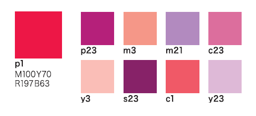

Libro: Cómo combinar colores - Haruyoshi Nagumo
Descripción
A través de sencillas fichas, el diseñador gráfico y profesor de diseño japonés Haruyoshi Nagumo nos enseña todo lo necesario para comprender cada color —características, historia, significados y usos—, entender cómo se comporta con otros colores y aprender a crear esquemas cromáticos que provoquen los efectos y sensaciones que buscamos en cada uno de nuestros proyectos. Una valiosa guía de color para escoger, usar y combinar colores básicos, acromáticos, dorados, plateados y fluorescentes.
Sobre el Autor
Haruyoshi Nagumo nació en Tokio en 1944. Se graduó en el Kanazawa College of Art, con una especialidad en Diseño Industrial. Actualmente da clases de diseño y trabaja activamente como diseñador gráfico. Ha desarrollado un nuevo sistema cromático basado en sus estudios sobre teoría del diseño y la tecnología de la representación del color. Creó Harumeji Inc. en 1990 y participa en gran cantidad de actividades sobre diseño, especialmente planificación estratégica y planificación y producción. También ha dado conferencias sobre diversos temas, como la formación corporativa para incentivar las ventas, el diseño, el arte contemporáneo, las técnicas de expresión, el color y la creación de ideas.
1. Cómo usar colores cálidos
En palabras del mismo autor, existen tres grupos de colores que difieren en la "sensación que transmiten". Se clasifican en: cálidos, fríos e intermedios. Sin embargo, estas categorías no son absolutas sino más bien una cuestión de conveniencia. Los colores cálidos son aquellos que tienen el poder de conmover a las personas y, como grupo, tienden a ser dinámicos.
Cómo usar el rojo
Algunas características:- El rojo tiene la longitud de onda más larga de todos los colores y es visible a distancia en cualquier circunstancia.
- Su impacto es muy fuerte, así que tenga cuidado con los colores vecinos que elija al combinarlo.
- Tradicionalmente, el rojo se ha elaborado a partir de compuestos inorgánicos (óxido férrico), plantas (cártamo) y el mineral cinabrio.
Grupo del Color Rojo
Dado que el rojo es un color tan prominente, es lógico que tenga muchos "amigos". Con el bermellón a la cabeza, encontramos miembros de la familia del rojo, como el carmesí oscuro, el rosa, el marrón e incluso el marrón oscuro, compitiendo por apropiarse de las maravillosas propiedades del rojo.
Estímulo Fisiológico
El rojo puede provocar un flujo de adrenalina en el cuerpo, generando excitación y, a su vez, levantando el ánimo, o puede ser una advertencia de peligro.
Paletas de colores usando rojo
Dónde encontrar el libro
Lo encuentras en inglés como "Swatch This, 3000+ Color Palettes for Success" en Amazon o en español en la librería Contrapunto.